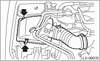
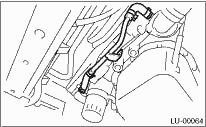
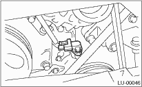
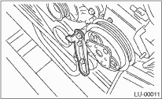
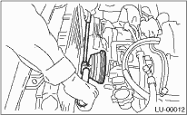
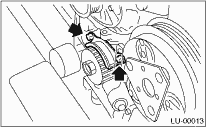
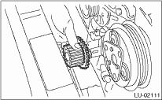
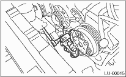
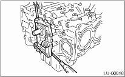

1. Set the vehicle on a lift.
2. Disconnect the ground cable from the battery.

3. Remove the collector cover. (Turbo model)
4. Lift up the vehicle.
5. Remove the under cover.
6. Remove the bolts which install water pipe of oil cooler to oil pump. Models with oil cooler

7. Remove the water pipe and hoses between oil cooler and water pump. Models with oil cooler

8. Remove the radiator. 
9. Remove the crankshaft position sensor.

10. Remove the V-belts.
11. Remove the V-belt tensioner.

12. Remove the crank pulley using ST.
| ST 499977100 | CLAMP PULLEY WRENCH (2.5 L MODEL) |
| ST 499977400 | CLAMP PULLEY WRENCH (2.0 L MODEL) |

13. Remove the water pump.
14. Remove the timing belt guide. (MT model)

15. Remove the crank sprocket.

16. Remove the bolts which install oil pump onto cylinder block.
NOTE:
When disassembling and checking the oil pump, loosen the relief valve plug before removing the oil pump.

17. Remove the oil pump by using flat tip screwdriver.
CAUTION:
Be careful not to scratch mating surfaces of cylinder block and oil pump.
